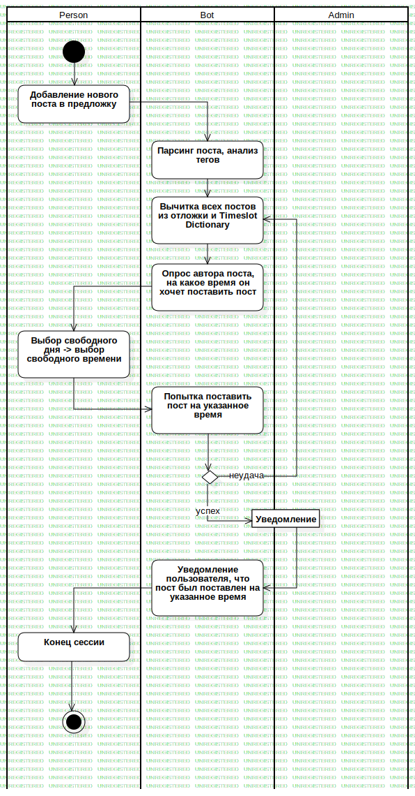

Answer
UMLActivity
AskBot
::
Business Processes
::
Answer
Description
none
Diagrams

Answer
Groups
Person
Bot
Admin
Nodes
InitialNode1
Добавление нового поста в предложку
Парсинг поста, анализ тегов
Вычитка всех постов из отложки и Timeslot Dictionary
Попытка поставить пост на указанное время
Action1
Edges
(InitialNode1→Добавление нового поста в предложку)
(Добавление нового поста в предложку→Парсинг поста, анализ тегов)
(Парсинг поста, анализ тегов→Вычитка всех постов из отложки и Timeslot Dictionary)
(Вычитка всех постов из отложки и Timeslot Dictionary→Опрос автора поста, на какое время он хочет поставить пост)
(Опрос автора поста, на какое время он хочет поставить пост→Выбор свободного дня -> выбор свободного времени)
(Выбор свободного дня -> выбор свободного времени→Попытка поставить пост на указанное время)
(Попытка поставить пост на указанное время→DecisionNode1)
неудача (DecisionNode1→Вычитка всех постов из отложки и Timeslot Dictionary)
успех (DecisionNode1→Уведомление)
(Уведомление→Уведомление пользователя, что пост был поставлен на указанное время)
(Уведомление пользователя, что пост был поставлен на указанное время→Конец сессии)
(Конец сессии→ActivityFinalNode1)
Properties
Name
Value
name
Answer
stereotype
null
visibility
public
isReentrant
true
isReadOnly
false
isSingleExecution
false
Owned Elements
Answer